Nikmati Kekayaan
Rasa Nusantara
Menghadirkan cita rasa autentik Indonesia dengan bahan pilihan dan resep warisan budaya.
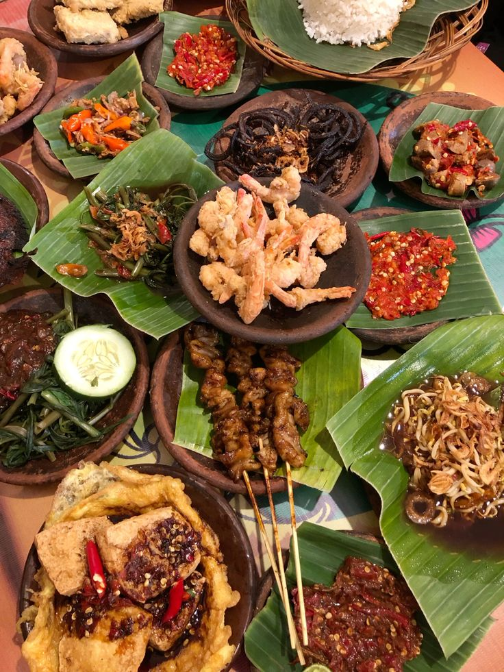
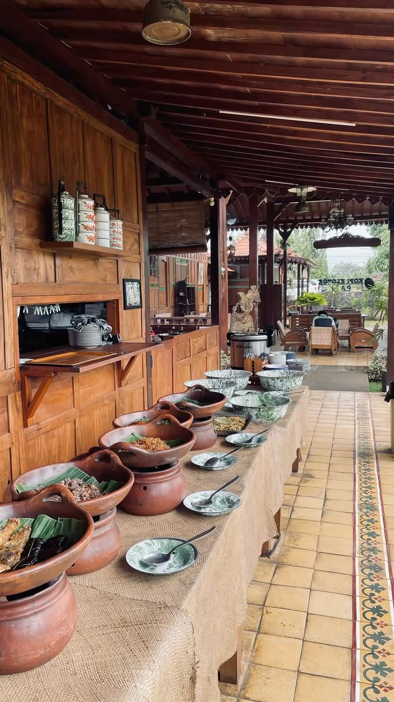
Mengenal Lebih Dekat Nusantara Taste
Kuliner Nusantara adalah restoran yang menghadirkan pengalaman menikmati makanan tradisional Indonesia dengan sentuhan modern.
Kami menggunakan bahan alami berkualitas serta mempertahankan filosofi dan rasa asli dari setiap daerah di Indonesia.
100% Bahan Lokal
Menggunakan bahan segar pilihan terbaik dari berbagai daerah Indonesia.
Menu Minuman Favorit Nusantara

Wedang Jahe
Minuman tradisional hangat dengan aroma jahe yang khas, cocok untuk menemani waktu santai.
Rp7.000

Es Teler
Minuman segar dengan perpaduan alpukat, kelapa muda, dan nangka yang manis serta menyegarkan.
Rp18.000

Es Dawet
Minuman tradisional dengan dawet lembut, santan gurih, dan gula merah manis yang menyegarkan.
Rp15.000
Menu Favorit Nusantara
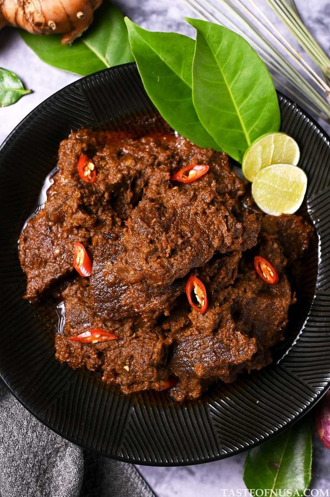
Rendang Padang
Daging sapi empuk dengan rempah khas Minangkabau.
Rp45.000
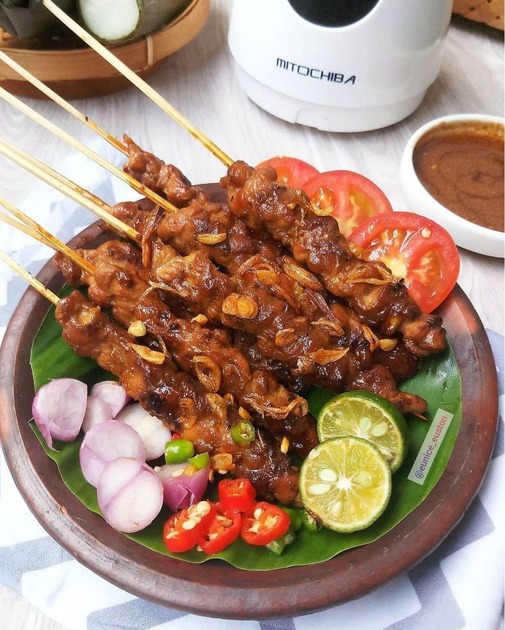
Sate Madura
Sate ayam dengan bumbu kacang khas Indonesia.
Rp30.000

Nasi Liwet
Nasi gurih tradisional dengan lauk yang lengkap.
Rp35.000
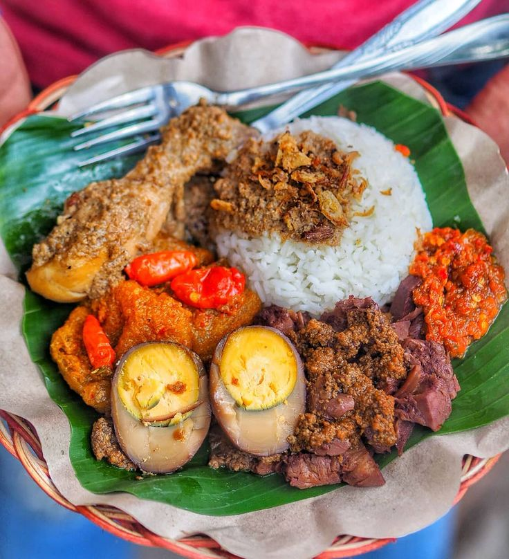
Gudeg Jogja
Olahan nangka muda khas Yogyakarta dengan cita rasa manis.
Rp40.000
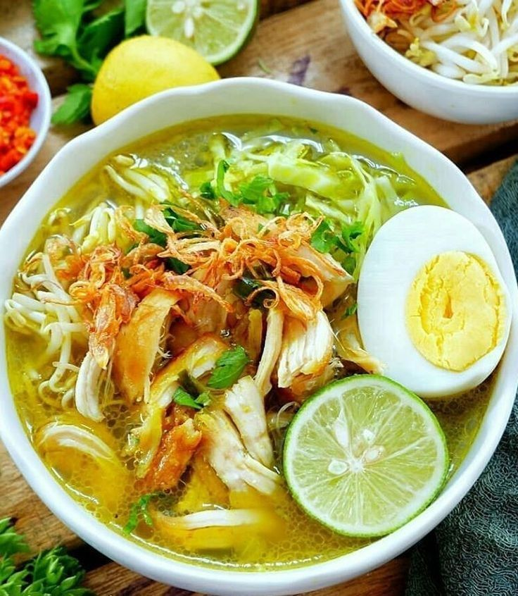
Soto Lamongan
Soto ayam dengan kuah rempah khas Jawa yang gurih.
Rp25.000

Ayam Betutu Bali
Ayam khas Bali dengan bumbu rempah yang kaya dan lengkap.
Rp50.000
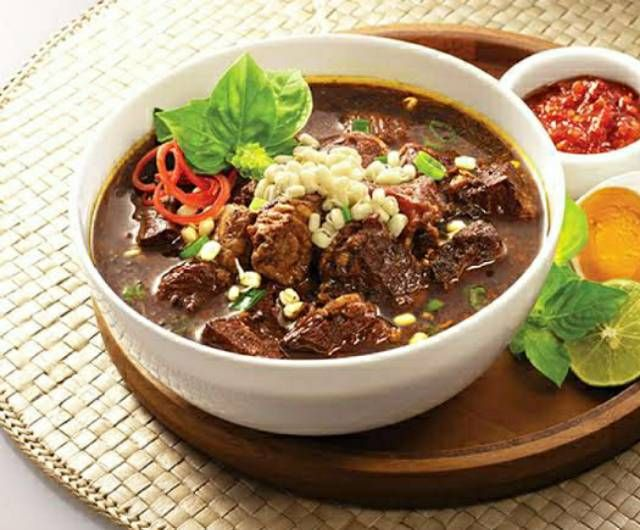
Rawon Jawa Timur
Kuliner khas jawa Timur dengan kuah hitam yang guring, kaya rempah, dan bikin nagih.
Rp33.000

Nasi padang
Hidangan khas Sumatera Barat dengan aneka lauk yang lezat.
Rp15.000
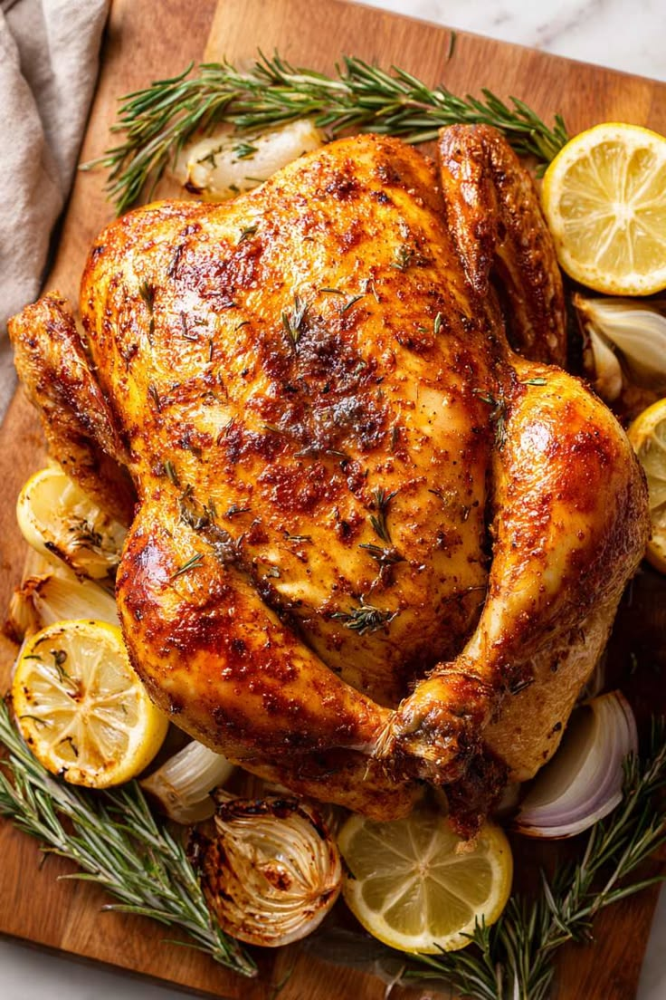
Roast chicken
Ayam panggang dengan tekstur lembut dan cita rasa gurih yang lezat, cocok dinikmati bersama keluarga.
Rp47.000
Galeri Kuliner
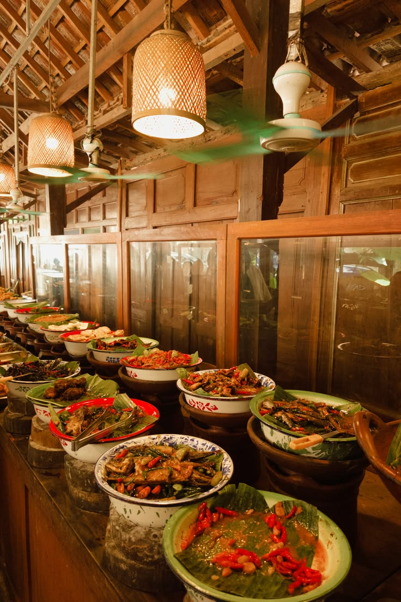
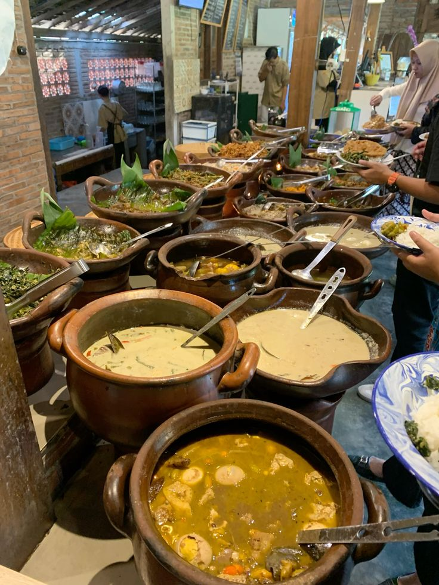
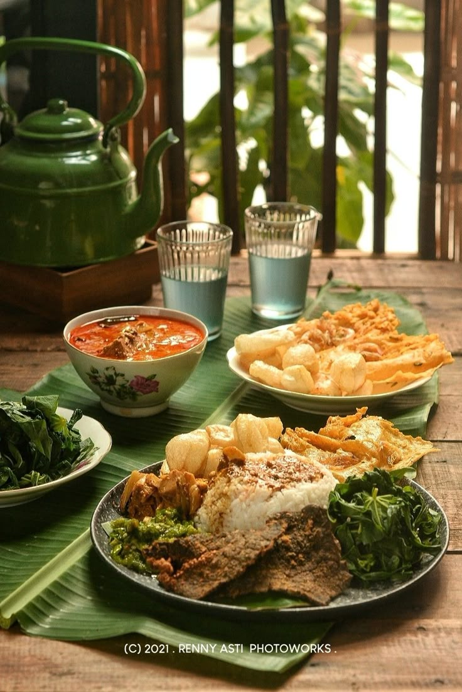
Apa Kata Pelanggan?
Putri
⭐⭐⭐⭐⭐
"Rasa makanan autentik dan tempatnya sangat nyaman."
Reza
⭐⭐⭐⭐⭐
"Pelayanan profesional dan makanan sangat lezat."